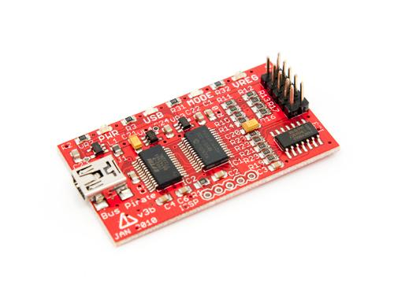

Bus Pirate v2 (assembled)
The BusPirate v3 is a universal bus interface that talks to electronics from a PC serial terminal, eliminating a ton of early prototyping effort when working with new or unknown chips.
Model:THM180C4M

Features
- USB interface, USB powered
- 0-5.5volt tolerant pins
- 0-6volt measurement probe
- 1Hz-40MHz frequency measurement
- 1kHz – 4MHz pulse-width modulator, frequency generator
- On-board multi-voltage pull-up resistors
- On-board 3.3volt and 5volt power supplies with software reset
- Macros for common operations
- Bus traffic sniffers (SPI, I2C)
- A bootloader for easy USB firmware updates
- Transparent USB->serial bridge mode
- 10Hz-1MHz low-speed logic analyzer
- Custom support in AVRDUDE, Flashrom
- AVR STK500 v2 programmer clone
- Scriptable from Perl, Python, etc.
- Translations (currently Spanish and Italian)
Resources and Supports
Copyright (c) 2008-2016 Seeed Development Limited (
www.seeedstudio.com /
www.seeed.cc)
This static html page was created from http://www.seeedstudio.com/wiki